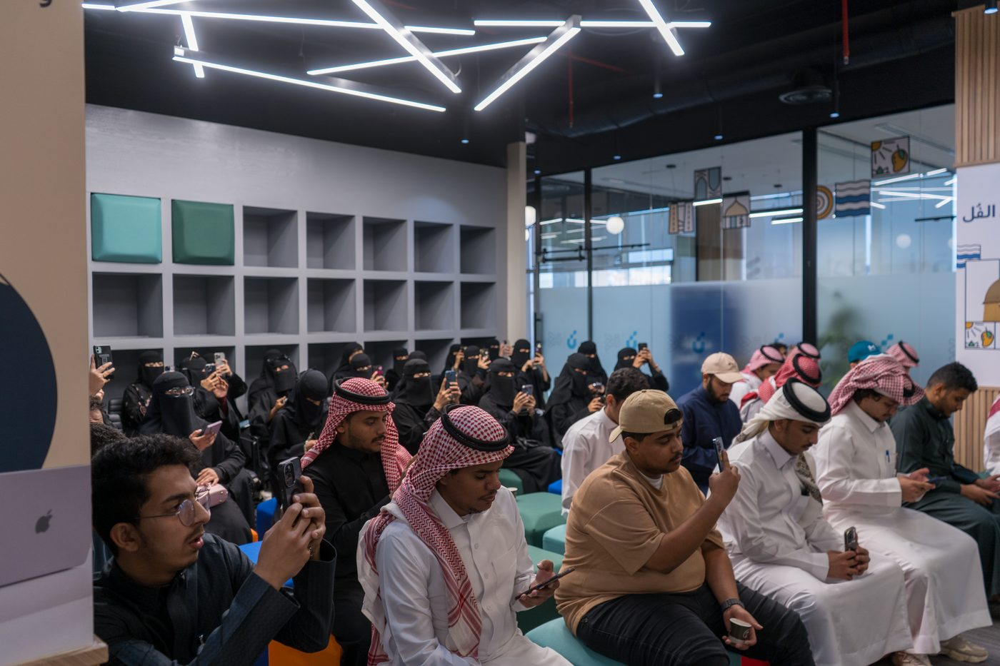
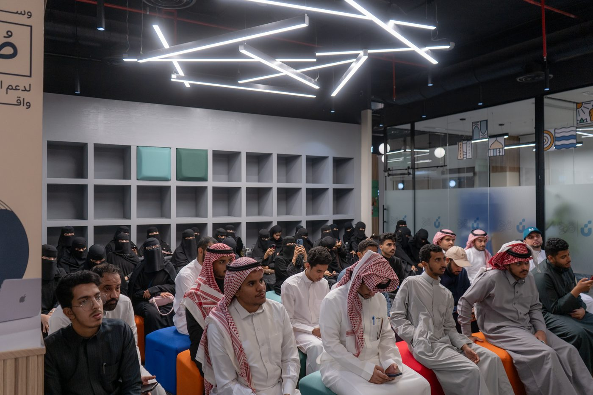
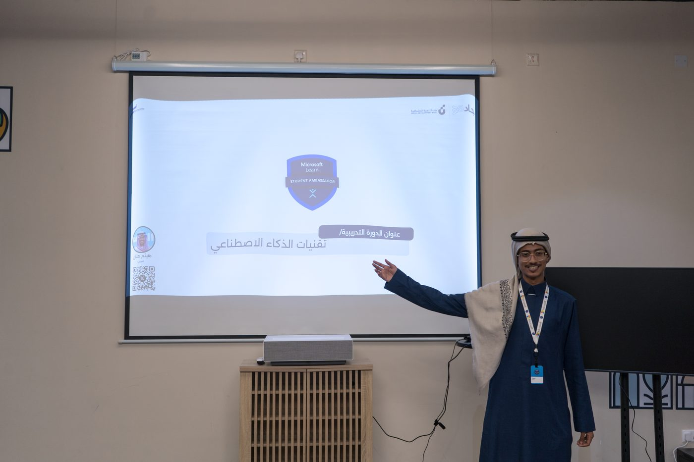
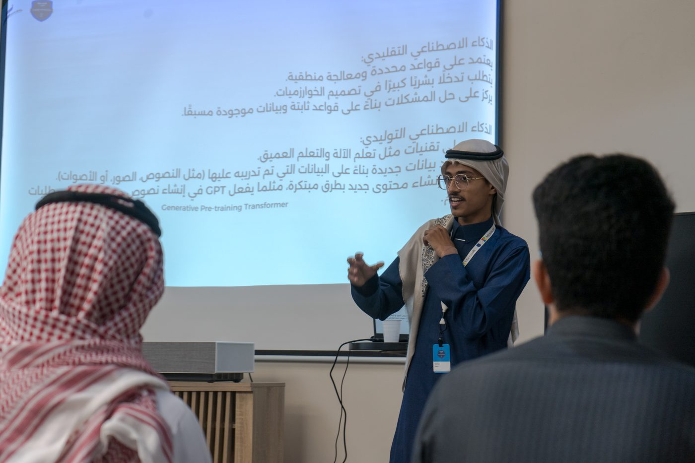
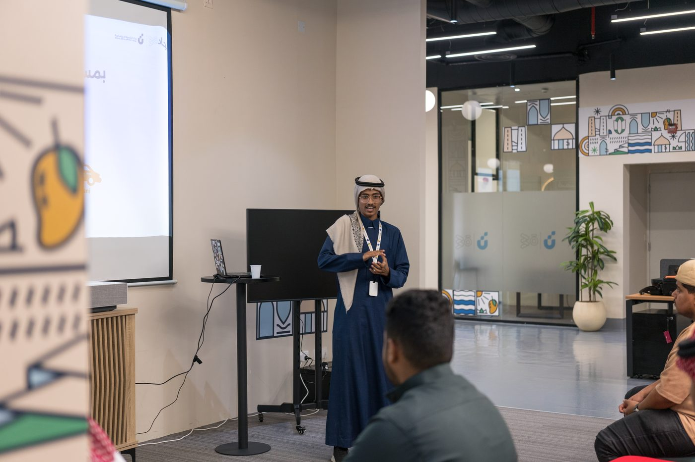
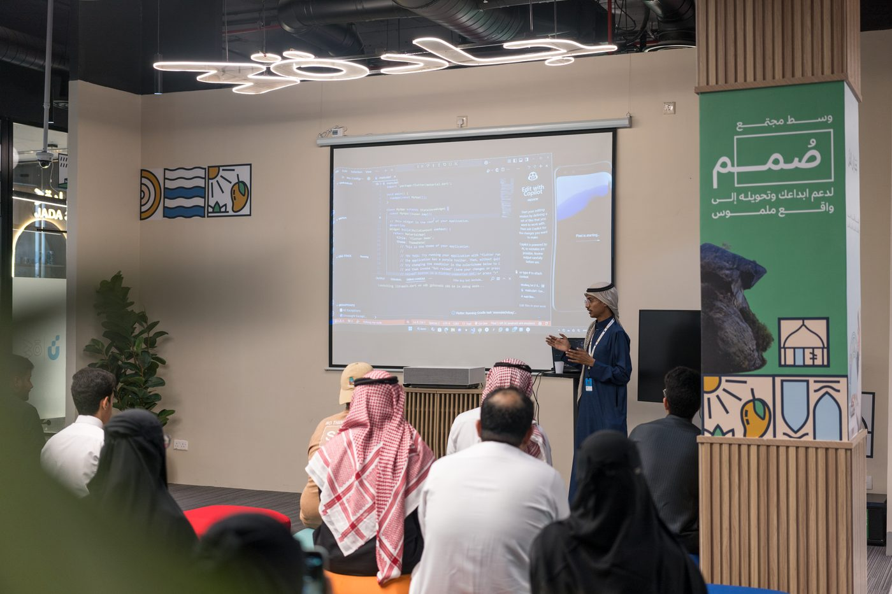
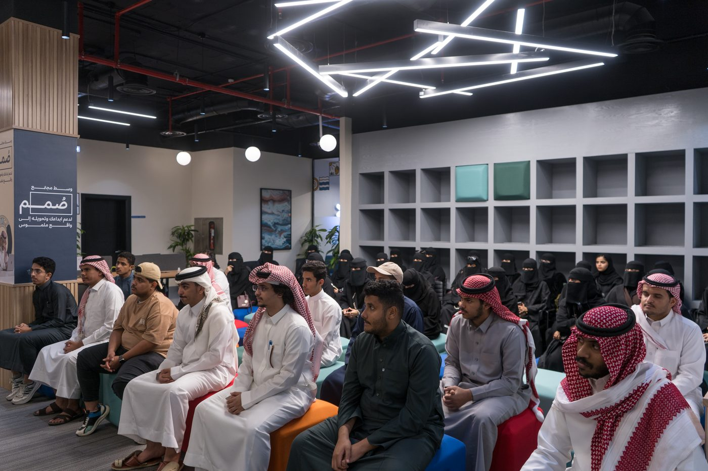

$ whoami
> مهندس ذكاء اصطناعي ومهندس برمجيات شامل
> الرياض، السعودية
$ status: open_to_work
أبني أنظمة ذكاء اصطناعي تعمل محلياً وبخصوصية كاملة، وأصمّم حلولاً برمجية وأنظمة مؤسسية بموثوقية عالية تخدم منتجات حقيقية.
مهندس ذكاء اصطناعي ومهندس برمجيات شامل، متخصص في بناء خطوط RAG وتدريب وخدمة النماذج اللغوية الكبيرة محلياً مع بنية تحتية تعمل دون اتصال وبخصوصية كاملة، بما يتماشى مع رؤية السعودية 2030.
أعمل حالياً مهندس ذكاء اصطناعي في MDS لأنظمة الحاسوب (MDS CS)، حيث أشرف على تدريب النماذج على 16+ وحدة NVIDIA H100/H200 وأبني أدوات بحث متجهي وأتمتة LLM. سبق أن سلّمت أنظمة مؤسسية بتوافر 99.9% وحسّنت كفاءة تبادل البيانات بنسبة 30%.
متعلّم ذاتي منذ 2014، بنيت 10+ تطبيقات أندرويد و20+ منصة ويب لعملاء حقيقيين، وأدرّس الذكاء الاصطناعي للطلاب عبر أكثر من 860 ساعة تطوعية، مع قناة تقنية تتجاوز مشاهداتها 156 ألف مشاهدة.
خبرة عملية في هندسة الذكاء الاصطناعي، الأنظمة المؤسسية، وتطوير البرمجيات مع نتائج قابلة للقياس.
مشاريع حقيقية بمشاكل واضحة وقرارات تقنية ونتائج قابلة للقياس — أكوادها مفتوحة المصدر.
محرك مطابقة متعدد الكيانات مع RAG وقاعدة بيانات متجهية (Milvus) وأربعة نماذج عميقة: يطابق الوجوه والصور والنصوص والأسماء، ويعمل محلياً بالكامل دون اتصال.
GitHubمحرك ذكاء اصطناعي محلي لمساعدات برمجية آمنة داخل Cline/Continue، بتشغيل كامل دون إنترنت أو تسجيل دخول ودون مغادرة البيانات للجهاز — مبني على Qwen2.5-Coder وSGLang مع أوضاع GPU تكيّفية.
GitHubواجهة برمجية لتلخيص المستندات العربية تعمل محلياً بالكامل مع دعم الدفعات، مبنية على ALLaM-7B مع تعرّف الكيانات باستخدام AraBert NER.
GitHubمنصة FinTech لرقمنة سجلات الديون وتتبع المدفوعات للمتاجر الصغيرة، بُنيت بـ Flutter وFirebase وNode.js.
GitHubمنصة إدارة السلامة والصحة المهنية للإنشاءات: تصاريح عمل PTW ومحرك اعتماد وأرشفة Google Drive لمصنع قهوة حقيقي في جازان.
GitHubتطبيق ويب (PWA) لتخطيط الطرق في الرياض مدعوم بالذكاء الاصطناعي، يجمع OSRM مع نمذجة مرور بايزي وبيانات TomTom.
GitHubكلمات حقيقية من متدربين في دوراتي ومعسكراتي على تويتر.
أتممت بنجاح دورة بناء التطبيقات باستخدام GitHub Copilot، تجربة ثرية استكشفت فيها قوة الذكاء الاصطناعي في البرمجة وتعلمت تطوير التطبيقات Flutter وتصميم الويب وتحليل البيانات بالذكاء الاصطناعي. شكرًا للأستاذ هيثم هتان وفريق مَـسـافـة.
فخور بحصولي على شهادة إتمام معسكر Build Apps with GitHub Copilot ضمن برنامج Microsoft Learn Student Ambassador، تجربة مميزة تعلمت فيها كيف أطور التطبيقات باستخدام الذكاء الاصطناعي.
الحمدلله أتممنا المعسكر، كان من أفضل المعسكرات بالنسبة لي، حرفيًا أشياء جديدة تعلمتها ومعلومات كثيرة ومكثفة، وانبهرت بقوة أداء GitHub Copilot.
انتهى معسكر الذكاء الاصطناعي المقدم من نادي HRSDAI، تعلمت أشياء كثيرة وصنعت أول بوت لي يتعرف على الوجوه، صراحة شدني المجال جدًا وأتمنى أتعمق فيه مستقبلًا.
اليوم الثاني من معسكر Build Apps with GitHub Copilot! تعلمت كيف أستخدم GitHub Copilot في تطوير تطبيقات Flutter، والنتيجة كود أسرع وبرمجة أسهل وإبداع بلا حدود.
مقتطفات من دورة الأمس، أول مرة أحضر دورة حضوريًا وكانت جدًا ممتعة وجميلة. شكرًا لنادي HRSDJU على الدورة الرهيبة وكل التوفيق لكم في المستقبل.
جهات تعاملت معها في مشاريع حقيقية — وظائف، منتجات، وخدمات رقمية.
مهندس ذكاء اصطناعي وبرمجيات شامل — وظيفة حالية
منتج طبي من التصميم إلى النشر (SolidJS, Vite)
بوت واتساب لأتمتة المواعيد والحجوزات
بوابة Edugate + إعادة تصميم موقع الجامعة مع دخول Nafath
حلول رقمية وتجربة مستخدم
تطبيق متجر (Flutter) + موقع تجاري
مهندس أمن شبكات — مستشفى بيش العام
مهندس برمجيات متدرب + مؤسس نادي HRSD
إنجازات موثقة على المستويين الوطني والمؤسسي.
الربع الرابع 2025 والربع الأول 2026 (على التوالي)
جامعة جازان 2025
أفضل مشروع بين الجامعات السعودية
حلول ذكاء اصطناعي تدعم رواد الأعمال والعمليات التجارية
حل FinTech يعزز الثقافة المالية وإدارة الديون الذكية
إلى جانب المركز الثالث في هاكاثون المحاسبة بجامعة الملك سعود 2024
شهادات معتمدة في الذكاء الاصطناعي، الحوسبة السحابية، تحليل البيانات، والأمن السيبراني.
SDAIA — سدايا
Amazon Web Services
IBM SkillsBuild
IBM
Cisco
أدوات وتقنيات أعمل بها فعلياً وأستطيع مناقشتها بعمق في المقابلات.
أفضل الشروحات والبثوث التقنية على قناتي — تبسيط مفاهيم معقدة لمن يريد التعلم.
دورات حضورية وعن بُعد في الذكاء الاصطناعي والبرمجة — من دورة أدوات وتقنيات الذكاء الاصطناعي إلى معسكرات GitHub Copilot.







دورة حضورية في أساسيات البايثون وتحليل البيانات وبرمجة الويب — مع محاضرات كاملة مسجلة.
دورة أمن سيبراني عملية ضمن فضاءتك — اختبار الاختراق بسيناريوهات تطبيقية.
دراسة التعلم العميق ومعالجة اللغات الطبيعية مع تجارب عملية لبناء نماذج عربية للهجات السعودية.
أكثر من 860 ساعة تطوع في تعليم التقنية والذكاء الاصطناعي وبناء المجتمعات الطلابية.
تنظيم الفعاليات والدعم التقني ونشر المحتوى، والمشاركة في تنظيم دورة أمن المركبات السيبرانية مع مبادرة العطاء الرقمي.
تأسيس وإدارة النادي وتنظيم معسكرات ذكاء اصطناعي لمدة ستة أيام في Python والرؤية الحاسوبية وكشف الأجسام، ودورات تطوير ويب.
تدريب أكثر من 3,000 طالب سنوياً على التطوير المدعوم بالذكاء الاصطناعي (GitHub Copilot)، وتقديم دورة اختبار الاختراق Metasploit.
تقديم دورات Flutter والذكاء الاصطناعي وتنظيم جلسات تدريبية وورش عمل للطلاب.
$ mail -s "hello" info@haithamhattan.sa
أبحث عن فرص في هندسة الذكاء الاصطناعي وتطوير البرمجيات، ومستعد للتعاون في مشاريع استشارية ومبادرات تقنية. تواصل معي مباشرة — سأرد خلال 24 ساعة.